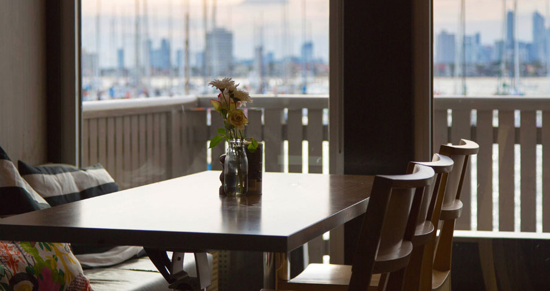

Bigbagfilms
6.09.2015
Прогуляться собираетесь? Вечерок-то будет хорош, только грозы бы вот не было. А впрочем, и лучше, кабы освежило... И вдруг Раскольникову ясно припомнилась вся сцена третьего дня под воротами; он сообразил, что кроме дворников там стояло тогда еще несколько человек, стояли и женщины. Он припомнил один голос, предлагавший вести его прямо в квартал. Лицо говорившего не мог он вспомнить и даже теперь не признавал, но ему памятно было, что он даже что-то ответил ему тогда, обернулся к